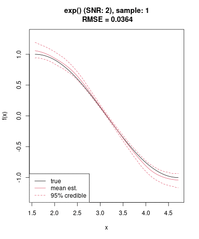
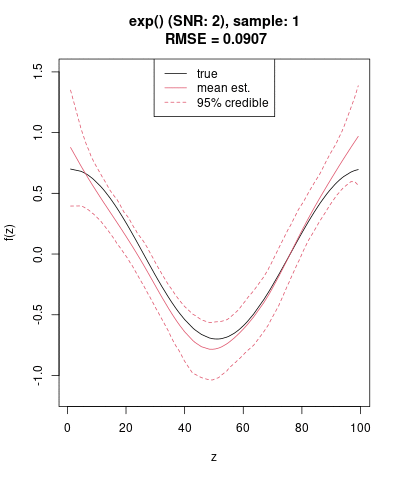
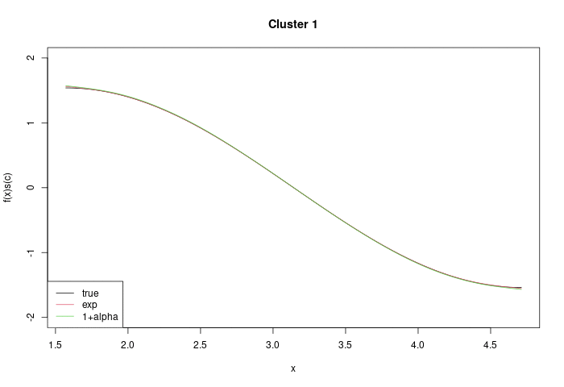

Simulations
Modeling multiplicative interaction effects in Gaussian structured additive regression models
by
Philipp Aschersleben
Julian Granna
Thomas Kneib
Stefan Lang
Nikolaus Umlauf and
Winfried Steiner
This page contains accompanying online materials to the paper. The files and data needed for the (single repetition) simulation can be found here.
Data Generating Process
We carry out a simulation study for a Gaussian distribution, where we link the \(\mu\)-parameter to the predictor
\[ \eta = f_1(t) + f_2(x) \, \cdot exp\left(\gamma_{0i} + f_3(z)\right) + f_4(lon,\, lat) \]
and a standard deviation \(\sigma^2\) such that the signal to noise ratio \(\sigma_{\eta}/\sigma\) is 2. For the nonlinear functions we assume
- \(f_1(t)=cos(2\pi(t-1)/100)\) with \(t\) being a sequence from 1 through 100,
- \(f_2(x) = sin(x)\), where \(x\) is uniformly distributed on \([\pi /2, \, 3\pi /2]\),
- \(f_3(z)=0.7 \, cos(2\pi(z-1)/100)\) where \(z\) is uniformly distributed on the interval \([1,\, 100]\),
- \(f_4(lon,\, lat)=sin(2lon+lat)\), where \(lon\) and \(lat\) correspond to the longitude and latitude coordinates of the
centroids of the 3-digit postcode regions.
250 repititions
Using the data generating process described above, we simulate 250 sets and run a model on each set. Below, you find the resulting effects as GIFs for each of the 250 models.
Estimated effect \(\hat{f}_1(t)\)

Estimated effect \(\hat{f}_2(x)\)
 ### Estimated effect \(\gamma_{0i}\)

Estimated effect \(\hat{f}_3(z)\)

Estimated effect postcode

Estimated \(f(x)exp(\cdot)\)
